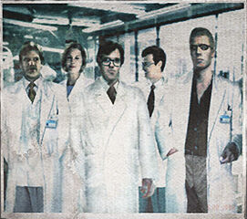

Welcome to Raccoon City!
Did you know: While we are the home of pharmaceutical giant Umbrella Corporation, Raccoon city is a vibrant and dynamic city with a long, rich history of its own. In this guide, we'll introduce you to just a few of the more unusual points of interest our city has to offer.
Raccoon City Police Station
The building in the center of town wasn't always a police station—in fact, it used to be an art museum. Various features like the unusual clock tower and the goddess statue in the main hall remind us of a bygone era.
Orphanage
Just a few blocks from the police station is an orphanage founded and run by the Umbrella Corporation with the help of generous donations from businesses and citizens alike. The building is known for its stained glass window, which attracts visitors from around the world.
Senior Researcher Albert Wesker with his research team